- Unfall-, Brand-, Diebstahl- und Gefahrenschutz unterscheiden,
- Sicherheitszeichen und Gefahrenpiktogramme deuten,
- Maßnahmen für ein Beispiel-Lager nennen.
Ein Lager ist ein Arbeitsplatz mit Gefahren: schwere Lasten, Stapler, brennbares Material, wertvolle Ware und Chemikalien. Sicherheit im Lager bedeutet Unfallschutz, Brandschutz, Diebstahlschutz, Gefahrenschutz und Umweltschutz. Den Umweltschutz behandelst du im nächsten Modul.
1. Unfallschutz
Der Arbeitgeber muss Arbeitsplätze, Maschinen und Geräte so einrichten, dass Beschäftigte vor Gefahren für Leben und Gesundheit geschützt sind. Das regeln zum Beispiel das Arbeitsschutzgesetz, die Arbeitsstättenverordnung und das Produktsicherheitsgesetz (nur sichere technische Arbeitsmittel dürfen auf den Markt). Jeder Beschäftigte muss die Unfallverhütungsvorschriften beachten.
Die Berufsgenossenschaften und Unfallkassen (Träger der gesetzlichen Unfallversicherung) und die Gewerbeaufsicht (Staatliches Amt für Arbeitsschutz) überwachen die Einhaltung. Ab 20 Beschäftigten muss ein Betrieb Sicherheitsbeauftragte bestellen.
Zu den Maßnahmen gehören:
- technische Maßnahmen: zum Beispiel geprüfte Leitern und Geräte (CE- oder GS-Zeichen), Hubwagen und Stapler statt Heben von Hand,
- organisatorische Maßnahmen: zum Beispiel Unterweisungen, Sicherheitsschuhe beim Tragen schwerer Lasten, Regeln für Verkehrswege,
- Sicherheitszeichen.
| Bild | Zeichenart | Farbe und Form | Beispiel |
|---|---|---|---|
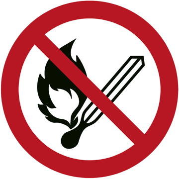 |
Verbotszeichen | rot, rund, mit Querbalken | Feuer, offenes Licht und Rauchen verboten |
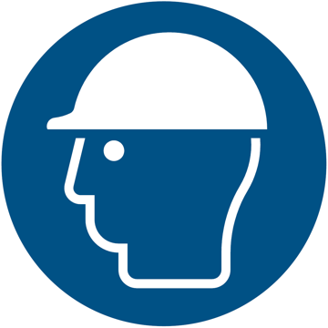 |
Gebotszeichen | blau, rund | Kopfschutz (Schutzhelm) benutzen |
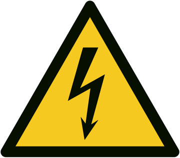 |
Warnzeichen | gelb, dreieckig | Warnung vor elektrischer Spannung |
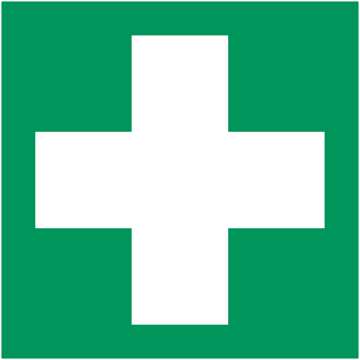 |
Rettungszeichen | grün, rechteckig | Erste Hilfe, Notausgang |
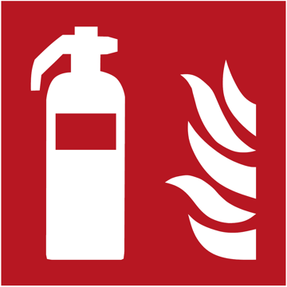 |
Brandschutzzeichen | rot, rechteckig | Feuerlöscher |
Die Sicherheitszeichen entsprechen der Technischen Regel für Arbeitsstätten ASR A1.3. Sie stammen, wie auch die Gefahrenpiktogramme, aus dem Lernportal der BGW (bgw.uv-lernportal.de).
Bei Bildschirmarbeit (Lagerverwaltung am PC) gelten besondere Regeln für Arbeitsplatzgestaltung, Beleuchtung und Pausen. Für das Bewegen schwerer Lasten muss der Arbeitgeber Hilfsmittel bereitstellen.
2. Brandschutz
Wer Bränden vorbeugen will, muss die Gefahrenquellen kennen: Heizungen, brennbare Flüssigkeiten, Papier und Kartonagen.
| Maßnahme | Beispiel |
|---|---|
| Bauliche Einrichtungen | Brandschutztüren und -wände, Notausgänge, Rettungswege |
| Brandmeldeanlagen | Rauch- und Wärmemelder |
| Feuerlöscheinrichtungen | Sprinkleranlage, Feuerlöscher |
| Organisatorische Maßnahmen | Rauchverbot, jährliche Brandschutzübung, Unterweisung |
Ein Gang, ein Notausgang oder ein Feuerlöscher darf nie zugestellt werden, auch nicht „nur kurz“. Im Notfall zählt jede Sekunde.
3. Diebstahlschutz
In den meisten Betrieben haben Kunden keinen Zutritt zum Lager. Diebstähle werden deshalb oft von Mitarbeitern oder Lieferern begangen. Hilfreich sind:
- Zutritt nur für berechtigte Personen,
- abgeschlossene Bereiche (Verschlusslager) für hochwertige Ware,
- Trennung von Anlieferungs- und Auslieferungsrampe,
- lückenlose Erfassung von Retouren im ERP-System,
- Kameras und Sicherungsetiketten, wo Kunden Zugang haben (Cash-and-carry).
Unordnung, fehlende Kontrollen und unübersichtliche Anlieferung begünstigen Diebstahl.
4. Gefahrenschutz
Waren, die Menschen oder andere Waren gefährden, müssen besonders behandelt werden. Für Chemikalien gilt das weltweit abgestimmte GHS-System (in der EU: CLP-Verordnung). Die Kennzeichnung muss auch im Lager erkennbar sein. Es gibt neun Gefahrenpiktogramme mit rotem Rand in Rautenform. Alle neun siehst du hier als Bild:
| Bild | Name | Bedeutung |
|---|---|---|
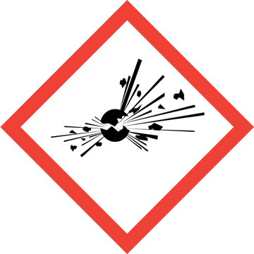 |
explodierende Bombe | explosive Stoffe |
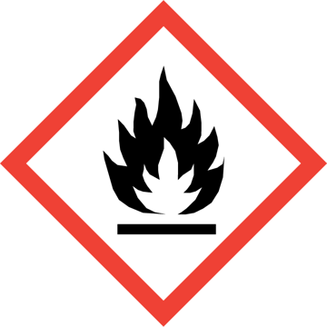 |
Flamme | entzündbare Stoffe |
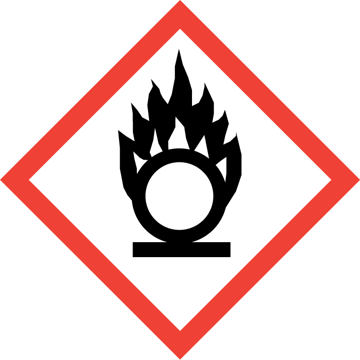 |
Flamme über Kreis | brandfördernde (oxidierende) Stoffe |
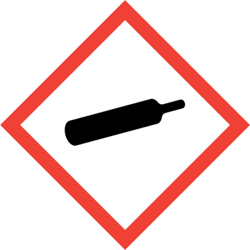 |
Gasflasche | Gase unter Druck |
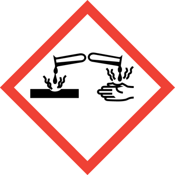 |
Ätzwirkung | ätzend auf Haut und Augen, schädigt Metalle |
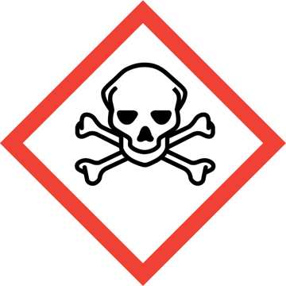 |
Totenkopf | giftig |
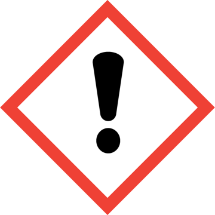 |
Ausrufezeichen | reizend oder gesundheitsschädlich |
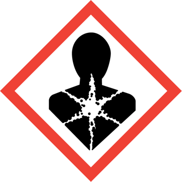 |
Gesundheitsgefahr | schwere Gesundheitsschäden auf Dauer |
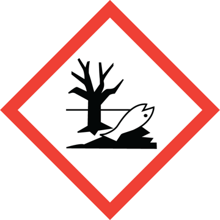 |
Umwelt | gewässergefährdend |
Zu jedem Gefahrstoff gibt es ein Sicherheitsdatenblatt. Es nennt Gefahren, Schutzmaßnahmen und Erste Hilfe. Beim Hersteller oder im Internet kannst du es abrufen.
1 · Zeichen zuordnen
10 min2 · Maßnahmen zuordnen
10 min3 · Gefahrenpiktogramme
10 min4 · Sicherheit für die BüroComfort GmbH
15 minDas Lager der BüroComfort GmbH enthält Büromöbel, Papier, Toner, Tablets und Laptops sowie Reinigungsmittel. Nenne zu jedem der vier Bereiche (Unfall-, Brand-, Diebstahl- und Gefahrenschutz) eine passende Maßnahme und begründe sie kurz.
Mögliche Lösung
- Unfallschutz: Hubwagen und Stapler für schwere Möbel, damit nicht von Hand gehoben wird; Sicherheitsschuhe.
- Brandschutz: Papier und Kartons sind gut brennbar, darum Rauchverbot, Brandmelder, Sprinkler und freie Rettungswege.
- Diebstahlschutz: Tablets und Laptops im abgeschlossenen Bereich, Zutritt nur für berechtigte Personen.
- Gefahrenschutz: Reinigungsmittel mit GHS-Piktogrammen kennzeichnen, getrennt lagern und Sicherheitsdatenblatt bereithalten.
5 · Informationen der Berufsgenossenschaft
15 min +Suche im Internet eine Information der Berufsgenossenschaft (zum Beispiel der BGHW oder der DGUV) zum Unfallschutz im Lager. Fasse die wichtigsten Aussagen in fünf Sätzen zusammen und stelle sie der Klasse vor.
Welche Farbe und Form hat ein Gebotszeichen (zum Beispiel „Schutzhelm tragen“)?
- Rot, rund, mit Querbalken
- Blau, rund
- Gelb, dreieckig
Welche Maßnahme gehört zum vorbeugenden Brandschutz?
- Brandmeldeanlage und Feuerlöscher
- Videoüberwachung
- Sicherheitsschuhe
Welches Piktogramm kennzeichnet Gefahrstoffe nach dem weltweit abgestimmten System (GHS)?
- Rote Raute mit Symbol
- Blauer Kreis mit weißem Symbol
- Grünes Rechteck mit Pfeil